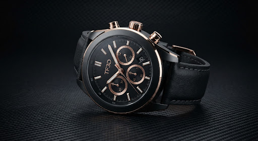
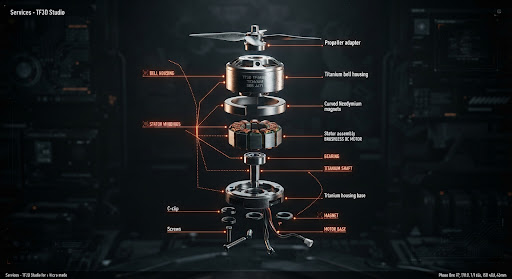
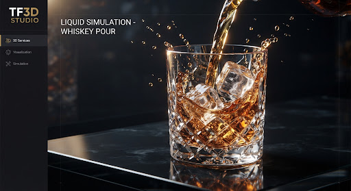
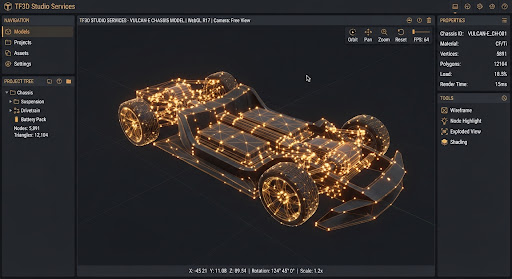

Pipeline Architecture // SVR-2025
Capabilities & Visualization Services
Tailored high-impact visual assets engineered for e-commerce, crowdfunding campaigns, global advertising, and industrial launches.
Section 01 // Core Verticals
Engineered Visual Disciplines

Vertical 01
60FPS // MOTION
Photorealistic Packshots & Hero Stills
8K ultra-resolution multi-angle e-commerce renders, bespoke architectural lifestyle composites, and strict Amazon/Shopify compliant asset sets with isolated alpha transparency.
Multi-Angle Orthos
Lifestyle Sets
32-bit Cryptomatte

Vertical 02
60FPS // MOTION
3D Product Motion & Exploded Views
Cinematic camera choreography, seamless assembly/disassembly mechanical storytelling, precision gearing kinematics, and technical X-ray cross-sections for breakthrough product reveals.
Mechanical Rigs
X-Ray Cutaways
Sound Design Sync

Vertical 03
FLUID // SIM
Liquid, Smoke & Complex Particle VFX
Physical computational fluid dynamics for beverage splashes, cosmetic creams, micro-surface condensation beads, aerodynamic wind-tunnel vortexes, and radiant particle emissions.
FLIP Fluid Dynamics
Viscosity Tuning
Subsurface Caustics

Vertical 04
REALTIME // GLTF
Real-Time 3D & WebGL / AR Integration
Lightweight, topology-optimized low-poly 3D models with baked PBR textures for zero-latency browser configurators, Three.js frameworks, and iOS QuickLook / Android AR deployment.
GLTF & USDZ Ready
LOD Optimization
Browser Viewport HUD
Section 02 // Execution Pipeline
Four-Stage Rigorous Workflow
01
CAD Ingest & Briefing
Ingestion of engineering files (.STP, .STEP, .IGES, CAD) or concept rough sketches. We run topology diagnostics, stitch non-manifold surfaces, and establish exact creative guidelines.
T-0 TO T+48H02
Clay & Lens Calibration
Untextured neutral clay passes for focal length, sensor crop, dynamic perspective, and composition lock. Angle sign-off prior to resource-heavy surface texturing.
ANGLE MILESTONE03
PBR Shading & Lighting
Micro-surface displacement, roughness maps, anisotropy, and customized HDRI illumination rigs matching physical studio reflectors and cinematic rim fixtures.
TEXTURE REVIEW04
Multi-Pass Final Delivery
Full 8K rendering with depth, diffuse, specular, normal, and Cryptomatte ID passes. Complete color-graded master deliverables plus organized native scene files.
HANDOFF COMPLETESection 03 // Specifications
Deliverables & Technical Specs
Stills & Layers
OpenEXR / TIFF / PNG
Uncompressed 16/32-bit linear color space with multi-channel Cryptomatte passes, separate reflection, ambient occlusion, depth z-pass, and transparent alpha cutouts.
Cinematic Motion
ProRes 4444 XQ / H.265
Native 4K UHD and DCI 4096x2160 sequences exported up to 60fps. Rec.709 or ACEScg color managed profiles tailored for broadcast, digital billboards, or social.
Interactive & Web
GLTF 2.0 / USDZ / Draco
Under 15MB web-ready binaries, Draco mesh compression, packed metallic-roughness channels, and cross-browser AR compatibility testing across Safari and Chrome.
Project Sources
Cinema 4D / Blender / C4D
Fully packaged native project archives including linked PBR texture libraries, camera animation curves, lighting rigs, and shader graph node networks.
Fidelity Benchmark
STU-V5Render Precision Matrix
Continuous raytracing sample density across our dual 4090/A6000 production nodes.
Samples / Pixel (Path Tracing) 16,384
32
BIT FLOAT
0.01
MM TOLERANCE
ACES
COLOR SPACE
Average production turnaround: 5 to 10 business days per asset collection.
Section 04 // Frequently Asked Questions
PRODUCTION CLARITY & TERMS
What CAD file formats do you accept, and do I need to prepare them?
We natively accept standard engineering and surface formats including STP / STEP, IGES, SolidWorks (.sldprt / .sldasm), Rhino 3DM, Parasolid (x_t), OBJ, and FBX. You do not need to convert or re-topologize your models; our studio pipeline handles industrial NURBS-to-polygon conversion, seam reconstruction, and normal vertex alignment in-house under strict confidential NDA protocols.
What is the standard turnaround timeframe for stills and motion?
For standalone packshot sets (5 to 10 high-resolution hero angles), delivery is typically 5 to 7 business days from geometry sign-off. For 30-to-60 second cinematic product motion reels or complex particle/fluid simulations, typical production cycles run 2 to 3 weeks, punctuated by formal milestone review checkpoints at clay, animation draft, and final grade. Expedited turnaround sprints are available upon request.
How are client revisions and artistic feedback structured?
Every fixed quote encompasses two complete revision rounds at both the Clay Stage (camera coordinates, angles, and framing) and the Texture/Lighting Stage (materials, labels, micro-imperfections, and color balance). Because we finalize geometry and camera paths before rendering final frames, revision iterations are swift and focused without unexpected scope additions.
Do you provide full native source files upon project completion?
Yes. All deliverables are provided with full commercial rights. For enterprise tiers and full campaign packages, clean native Cinema 4D, Blender, or Houdini project directories along with PBR material shaders and lighting setups can be included in the final handover package for internal archive and brand usage.